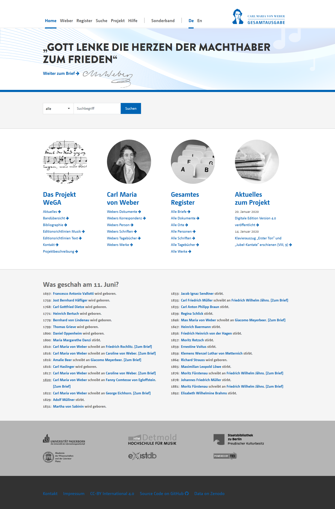
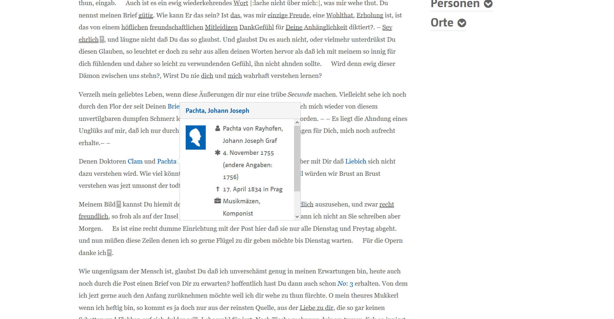
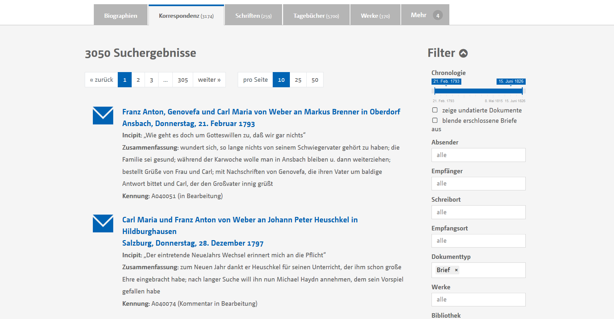
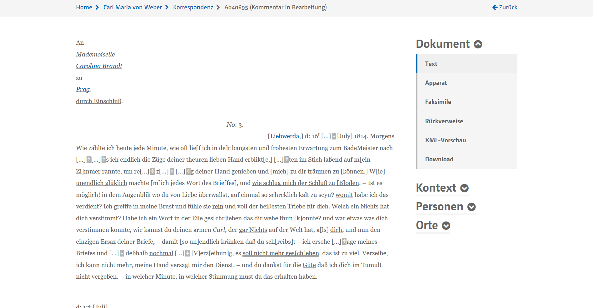
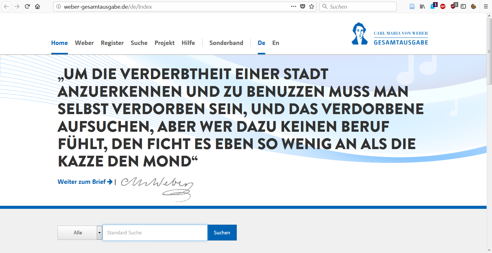
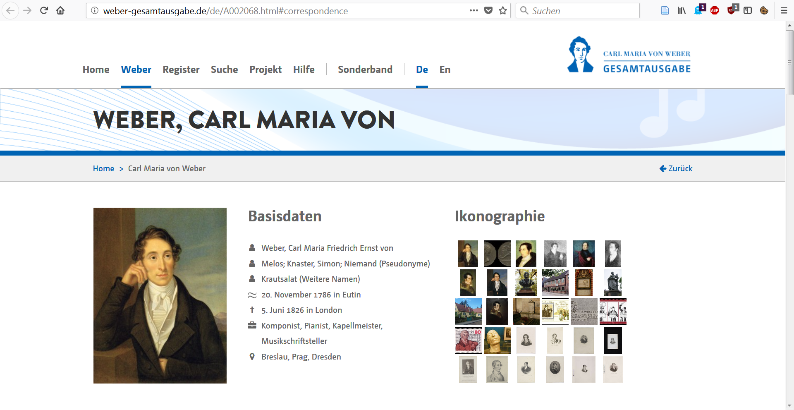
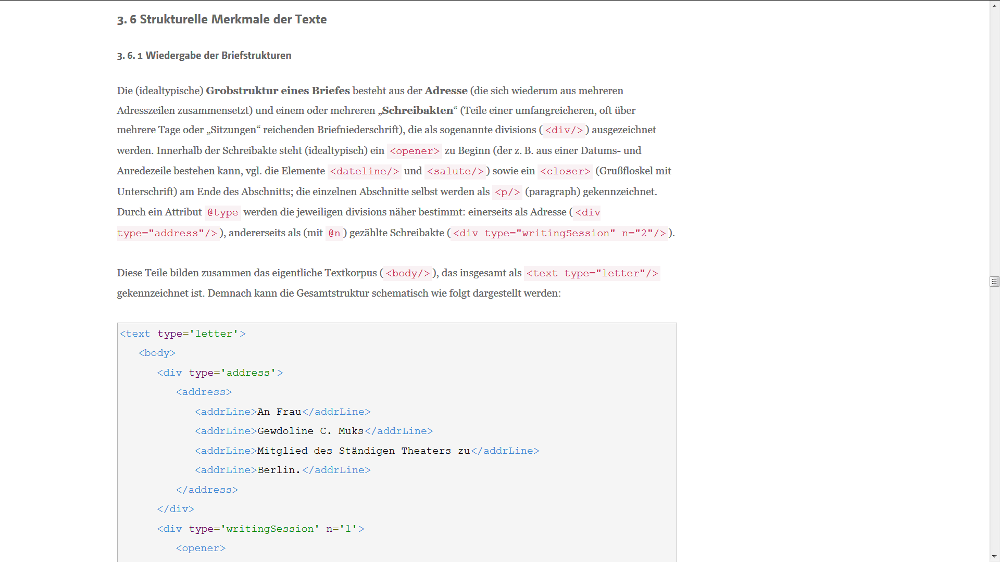

Die offene Editionswerkstatt: Carl Maria von Webers Briefe in der digitalen WeGA
Table of Contents
Abstract
This review focuses on the digital edition of correspondence by the German composer Carl Maria von Weber (1786-1826). In addition to his famous opera "Der Freischütz" and a huge repertory of other esteemed compositions, Weber left behind a vast number of documents that help to understand his musical works and the musical culture of the early Romantic period. The complete edition of Weber's works and documents, "WeGA" for short, has been providing transcripts and facsimilia online since 2011 including a digital edition of Weber's correspondence. The project provides a faceted search interface, dense linked data integration, open licenses, various export formats and an API as well as clear and transparent documentations. Overall, it can be seen as an example for a-state-of-the-art digital edition.
Einführung
Carl Maria von Weber und die WeGA
Den Leserinnen und Lesern dürfte der Komponist Carl Maria von Weber (1786–1826) zumindest namentlich bekannt sein. Seine berühmte Oper „Der Freischütz“, die 1821 am Berliner Schauspielhaus uraufgeführt wurde, hat bis heute ihren festen Platz im internationalen Bühnenrepertoire. Weniger geläufig dürften den meisten die zahlreichen Stationen seines bewegten Lebens sein: Der in Eutin bei Lübeck gebürtige Musiker und Dirigent war Sohn eines Theatergesellschafters und erhielt seine Ausbildung an den renommiertesten Bühnenorten seiner Zeit, darunter Mannheim, Salzburg, München und Wien. Abgesehen von seinem bekanntesten Werk schuf er auch im Bereich der Konzert- und Kammermusik hochgeschätzte Kompositionen und schrieb in diversen Zeitungen und Zeitschriften über das zeitgenössische Musikleben. Auf seinem Lebensweg, der von Jugend auf durch zahlreiche Reisen und Ortswechsel geprägt war, wirkte er vor allem als Kapellmeister an herausragenden musikalischen Schauplätzen seiner Zeit, darunter neben Dresden auch Breslau, Stuttgart und Prag.1 Während eines Aufenthalts in London starb er an den Folgen einer chronischen Krankheit im Alter von 39 Jahren.Es ist Eines der beglückendesten Vorrechte der schönen Künste und Wißenschaften, große und herrliche Weltbegebenheiten im freundlichen Gewande nochmals vor die Augen der Welt zu führen
Die vorliegende Briefedition ist ein Teilbereich der digitalen Carl-Maria-von-Weber-Gesamtausgabe (kurz: WeGA),2 die mehrere Facetten der musikalischen und schriftlichen Hinterlassenschaften des Komponisten erschließt. Der Schwerpunkt liegt dabei auf der Herausgabe seines kompositorischen Werkes, die von mehreren Texteditionen flankiert wird: Weber verfasste öffentliche Zeitungsberichte und Rezensionen, korrespondierte mit zahlreichen Briefpartnern und legte Notizen sowie persönliche Gedanken in privaten Tagebüchern nieder. Das selbsterklärte Ziel der WeGA besteht darin, all dieses Material erstmals systematisch zusammenzuführen und bis zum 200. Todestag Webers im Jahr 2026 sämtliche Quellen öffentlich verfügbar zu machen,3 was sowohl im klassischen Printformat als auch in einer digitalen Edition geschehen soll. Die Arbeitsstellen des Vorhabens, welches von der Akademie der Wissenschaften und der Literatur Mainz gefördert wird, sind auf Berlin und Detmold verteilt. Derzeit werden dort vorrangig die Materialien ediert, die parallel zum „Freischütz“ entstanden sind, wodurch eine Kontextualisierung des 2015 erschienenen „Freischütz digital“4 (kurz: „FreiDi“) entsteht. Joachim Veit und Peter Stadler zeichnen als hauptamtliche Mitarbeiter der digitalen Ausgabe verantwortlich.
Webers Korrespondenz und deren Edition
Komponistenbriefe stellen für die Musikforschung oft wertvolle Quellen dar, indem sie einen unmittelbaren Zugang für die historischen Kontexte musikalischer Werke bieten und die Lebens- und Arbeitsumstände der Musikschaffenden besonders nah beleuchten können. Im Fokus dieser Rezension steht die digitale Edition von Webers Briefen, die – nach der Notenausgabe – die umfangreichste Abteilung der WeGA bilden. Derzeit verzeichnet die WeGA 1.867 Briefe von Weber und 1.078 Briefe an Weber, zusammen 2.945 Briefe (Stand: 22.05.2020), die in der Printausgabe in 10 Bänden erscheinen sollen. Von Webers Briefen ist schätzungsweise ein Drittel überliefert, während ein Teil der verschollenen Briefe aus Webers Tagebucheinträgen und ein weiterer Teil aus den überlieferten Briefen erschließbar ist.
Ein guter Teil der Briefe ist an nahestehende Angehörige adressiert, insbesondere an Caroline Brandt, seit 1817 Webers Gattin. Diese Briefe liegen durch die Unterstützung der Staatsbibliothek zu Berlin als digitale Faksimiles vor. Außerdem korrespondierte Weber mit zahlreichen Persönlichkeiten des zeitgenössischen Musik-, Theater- und Verlagswesens, darunter die Musikverleger Adolph Martin Schlesinger (*1769) in Berlin und Nikolaus Simrock (*1751) in Bonn, der Musikliterat und Gründer der Allgemeinen Musikalischen Zeitung Friedrich Rochlitz (*1769) und nicht zuletzt der Opernkomponist Giacomo Meyerbeer (*1791). Webers Briefe sind daher nicht nur als Primärquellen für die Weber-Forschung relevant, sondern mindestens auch für alle musikwissenschaftlichen Forschungsvorhaben, die das frühe 19. Jahrhundert berühren.
Die Volltexterschließung und Kommentierung der Briefe konzentrierte sich zuletzt auf die Jahrgänge 1817–1821, also auf Webers frühere Zeit in Dresden, die im Vorfeld des Freischütz steht. Dies geschah synchron mit anderen Sektionen (Tagebücher und Schriften) im Zusammenhang mit der digitalen Freischütz-Ausgabe. Aktuell befinden sich die Jahrgänge 1812–1815 und 1819–1826 in Arbeit.5 Bislang nicht transkribierte Briefe wurden mit Metadaten und Inhaltsangaben erfasst, so dass Nutzende bereits auf einen „weitgehend vollständigen Katalog der Briefe Webers“ zugreifen können.6
Die digitale Briefausgabe
Verhältnis zur WeGA
Die WeGA als generischer Präsentationsrahmen
 
Eine Edition im Entstehen
Eine besondere Eigenschaft der digitalen WeGA ist das Konzept
der ‚offenen Werkstatt‘. Die Online-Präsentation reflektiert stets den
jüngsten Arbeitsstand des Projektes und legt transparent dar, welche
Bereiche bislang bearbeitet wurden, welche noch ausstehen und welche
sich aktuell im Bearbeitungsprozess befinden. Solch eine Darstellung als
kontinuierlich wachsende Edition stellt hohe Ansprüche an das Interface:
Der Arbeitsstand sowohl eines jeden einzelnen Dokuments als auch des
Korpus insgesamt ist nach guter wissenschaftlicher Praxis durchgehend
und nachvollziehbar zu kommunizieren, was der digitalen WeGA zweifellos
gut gelingt. Die Briefe lassen sich leicht nach dem Bearbeitungsstand
filtern, so dass die Suche auf die bereits transkribierten oder
kommentierten Briefe beschränkt werden kann – ohne Frage eine
essenzielle Funktion für eine offene Werkstatt. Aktuell sind 125 Briefe
bereits vollständig bearbeitet, während 917 transkribierte Briefe noch
auf die Kommentierung warten. Für die übrigen 2.027 noch nicht edierten
Briefe stehen Zusammenfassungen und Incipits im Apparat zur Verfügung,
was der inhaltsorientierten Recherche durchaus zugute kommt. Der
Fortgang der Arbeit am einzelnen Dokument lässt sich außerdem in der
XML-Vorschau anhand des Elements revisionDesc detailliert
nachlesen. Das Konzept einer work-in-progress-Präsentation ist insofern
auf allen Ebenen tadellos umgesetzt. Wünschenswert für neugierige
Weber-Forscher bliebe eine Auflistung der zuletzt fertiggestellten
Transkriptionen oder Kommentare.
Oberfläche
Bedienkonzept
Das in allen Teilbereichen einheitliche Bedienkonzept wirkt klar und wohlstrukturiert. Die digitale WeGA startet in medias res inmitten des Repositorys und „filtert“ die Gesamtliste bereits durch die Auswahl einer Rubrik (Briefe, Werke etc.). Über allen Dokumentenlisten und Registern erscheint daher der nicht ganz präzise Begriff „Suchergebnisse“. Die praktikable Umsetzung dieses bereichsübergreifenden Navigationsprinzips deutet auf ein solides und konsistentes Metadaten- und Indexierungskonzept hin, das auf eine Vielzahl heterogener Dokumententypen flexibel angewendet werden kann und an dem sich andere Projekte, die ebenfalls ein diversifiziertes Dokumentenkorpus zum Gegenstand haben, ein Vorbild nehmen dürften. Die generische Filtermaske erlaubt es, das gesamte Korpus nach selbst gewählten Kriterien zu sichten. Sortieren (z. B. nach Datum, Absender oder Empfänger) ist allerdings nicht möglich, denn dafür steht schlicht keine Funktion zur Verfügung. Gerade aufgrund der Heterogenität des Korpus wird nachvollziehbar, warum keine vorgefertigten Listen wie „Briefe von Weber“ oder „Briefe an Weber“ verfügbar sind, da diese den Blick der Nutzenden – oder vielmehr: die Möglichkeiten, die Perspektive auf das Korpus selbst zu bestimmen – unnötig begrenzen würden.
Öfters fehlt dabei jedoch ein einfaches Instrument, um sich einen Gesamtüberblick zu verschaffen. Beispielsweise existiert kein einfacher Weg, sich innerhalb der Register systematisch über die häufigsten Briefpartner Webers zu informieren.7 Gerade am Anfang fällt es ohne Vorkenntnisse schwer, sich innerhalb des Korpus zu orientieren, was durch die fehlende Sortierfunktion noch verstärkt wird. Weitere Filtermöglichkeiten wären wünschenswert. Auch eine simple statistische Visualisierung könnte bereits zur Übersichtlichkeit beitragen. An diesem Punkt benötigt das grundsätzlich sehr überzeugende, generische Bedienkonzept eine noch breitere Unterstützung alternativer Zugangswege. Dies könnte überdisziplinären Zielgruppen, also über die Weber-Community und über die Musikwissenschaft hinaus, einen leichteren Zugang eröffnen.
Eingedenk, dass die WeGA vielleicht gerade erreichen möchte, dass sich Nutzende mit dem Material selbst auseinandersetzen – anstatt sich durch eine vorgefertigte Gliederung in der Perspektive beeinflussen zu lassen –, ergibt das Konzept Sinn. Zu hinterfragen ist dann, inwieweit damit die Rolle des WeGA-Teams mit seiner umfassenden musikwissenschaftlichen, historischen und philologischen Expertise dekonstruiert werden und das gesamte Vorhaben eine positivistische Neigung bekommen würde.8 Die WeGA geht mit diesem Aspekt äußerst geschickt um, indem sie begleitende Texte anbietet: Eine übersichtlich gegliederte Biographie9 und über 40 verschiedene „Themenkommentare“ – beispielsweise zum „Freiberger Pressestreit“ oder zum „Dresdner Liederkreis“10 assistieren Nutzende auf ihrer Entdeckungsreise durch das vielschichtige Material. Es dürfte kaum eine zweite Ressource geben, die durch Verbindung aus Dokumenten und Kommentaren einen gleichermaßen übersichtlichen und konzentrierten Einstieg in Webers Schaffen und Wirken bieten kann und gleichzeitig Nutzende motiviert, einen individuellen Zugang zu dem umfangreichen Material zu finden. Die WeGA grenzt sich somit recht deutlich von einer Nutzerführung ab und bewegt sich in Richtung einer Nutzerassistenz, bei deren Umsetzung korpusorientierte Übersichtsfunktionen einen Mehrwert bieten könnten.
Register
Wichtige Zugangswege für die gezielte Recherche bieten die Register, die in der WeGA übersichtlich aufgebaut sind und deren Einzeleinträge vorbildlich mit Normdaten verlinkt sind (primär GND, daneben auch geoNames u. a.). Die Listen könnten narrativ noch stärker verdichtet werden:11 Aktuell sind in der alphabetischen Ortsliste nur Koordinaten und eine ID angegeben, was Nutzenden des Registers wenig dienlich sein dürfte. Hingegen ist nicht erfahrbar, aus welchen Gründen die 880 Ortsnamen jeweils relevant sind. Dasselbe gilt auch für das mit über 10.000 Einträgen sehr stattliche Personenregister, wo qualifizierende Informationen hilfreich wären: Die Liste könnte übersichtlicher sein, wenn sie nach Briefpartnern, in Dokumenten erwähnten Personen oder nach in Kommentaren erwähnten Personen filterbar wäre. Die Relevanz lässt sich momentan nur durch Einzelprüfung herausfinden.
In der Datenblatt-Ansicht könnten die in den Informationen schlummernden Zusammenhänge ebenfalls für die Präsentation genutzt werden. Ein Beispiel: Die biographischen Datenblätter verzeichnen unter anderem Pseudonyme, beispielsweise führte Weber offensichtlich den Namen „Krautsalat“. Das ist amüsant, und Nutzende würden sich vermutlich sofort mehr Kontext dazu wünschen. Hier fehlen entweder eine Erläuterung oder direkte Links zu den Nachweisstellen. Momentan bleibt nur der Umweg über die Volltextsuche.12
Beim Vergleich der Unterpunkte in den beiden Rubriken „Weber“ und „Register“ irritiert eine begriffliche und inhaltliche Differenz: Während unter „Weber / Korrespondenz“ insgesamt 3.069 Dokumente angeboten werden,13 finden sich unter „Register / Briefe“ insgesamt 6.904 Dokumente.14 Beides weicht von der oben genannten Anzahl von 2.945 Briefen ab. Ein Blick in die übersichtlich strukturierten und verständlich formulierten Editionsrichtlinien verschafft Klarheit: Unter „Korrespondenz“ subsummiert die WeGA diverse Sorten adressierter Schriftstücke, unter denen sich neben Briefen auch Albumblätter und Gästebucheinträge befinden.15 Indessen verzeichnet das „Register“ auch zahlreiche Briefe aus dem Umfeld der Weber-Forschung, beispielsweise Briefe des Vaters an Dritte oder Briefe aus dem Kontext der Werkausgabe. Die Untermenge der tatsächlichen Briefe von oder an Weber lässt sich in beiden Fällen nur durch Filterung nach Korrespondenzpartnern abbilden.16 Eine kurze Erläuterung dieser begrifflichen Unterscheidung wäre am Anfang der jeweiligen Seite für Nutzende hilfreich.
Facettierte Suche und Autocomplete-Funktion

Bei der dynamisch reagierenden Filtermaske müssen Nutzende mehrere Eigenheiten beachten. Mehrere Suchparameter werden immer mit logischem „Und“ verknüpft, so dass Suchanfragen mit komplementären Parametern wie „Briefe von oder an Weber“ ausgeschlossen sind. Innerhalb einer Kategorie wird indessen das logische „Oder“ angewendet, wobei die Auswahlliste nicht die korrekte Gesamtzahl der Suchergebnisse anzeigt. Der quasi stufenlose Schieberegler bei der Datumssuche, der drei Jahrzehnte auf 240 Pixel abbildet, ist aufgrund der mikroskopischen Abstände kaum präzise einsetzbar, weshalb eine explizite Eingabemöglichkeit hilfreich wäre.17
Die Autocomplete-Funktion findet auch mehrere eingegebene Fragmente in beliebiger Reihenfolge und Position im Wort („Ca We“ findet z. B. „Caroline Weber“ und „Carl Eberwein“), berücksichtigt dabei aber keine Großschreibung, so dass z. B. eine Suche nach Namensanfängen bzw. Rechtstrunkierung nicht möglich ist. Frühere oder alternative Namen derselben Person (z. B. „Caroline Brandt“ statt „Weber“) werden weder angezeigt noch gefunden, weshalb solche Namen nur über die Volltextsuche auffindbar sind. Die Autocomplete-Liste wird zudem stets unsortiert ausgegeben, so dass Nutzende öfters fast komplette Namen eintippen oder eine längere Liste durchsuchen müssen. Eine Sortierung nach Relevanz oder Trefferanzahl könnte dies beheben. Die alphabetische Sortierung (so die Grundeinstellung) erscheint aufgrund der Länge der Liste und der begrenzten Größe des Autocomplete-Menüs indessen nachteilig.
Transkription, Leseansicht und Faksimiles
Von den bereits bearbeiteten Briefen liegen sorgfältig erstellte Transkriptionen vor, die mithilfe der TEI-Richtlinien (P5) mit Metadaten und textkritischen Merkmalen versehen wurden. Das Repertoire des Markup reicht von topographischen und genetischen bis hin zu semantischen Elementen; selbst die variierenden Abstände zwischen einzelnen Sätzen in der Handschrift wurden berücksichtigt. Typische Strukturelemente von Briefen – Grußformel, Datumszeile etc. – sind ebenfalls mit den entsprechenden TEI-Elementen ausgezeichnet.18 Die Richtlinien dokumentieren die Übertragungsregeln detailliert und nachvollziehbar19 und zeugen von einer sorgfältigen Arbeitsweise.
Das TEI-Schema wurde um einige sinnvolle Custom-Elemente
ergänzt, beispielsweise für Werke der Musik. In der Theorie stünde dafür
auch das TEI-Element title zur Verfügung – da Werke der
Musik in diesem Projekt aber eine wichtige Entität darstellen, liegt die
Einführung eines eigenen Elements nahe. Eine TEI-all-konforme Version
des XML-Dokuments lässt sich außerdem über die API beziehen (dazu später
mehr).
Der Gebrauch der TEI-Elemente erscheint in einigen Fällen
noch revidierbar. Das häufig verwendete Kußsymbol, welches Weber in
seinen Briefen an Caroline oft benutzte,20
wird mit supplied
21
ausgezeichnet, das eher für Eingriffe am Editionstext (Emendationen
u. a.) vorgesehen ist, nicht aber für die verbale Umschreibung eines
texttopographischen Befundes. Da tatsächliche Ergänzungen wie z. B. im
Text offensichtlich fehlende Wörter mit demselben Element markiert
werden, wäre hier eine Differenzierung wünscheswert.22

Besonders hilfreich für das Lesen von Briefwechseln ist eine unter dem Stichwort „Kontext“ versteckte Funktion in der Seitenleiste, über die vorausgehende und nachfolgende Briefe direkt anwählbar sind. Dies funktioniert sowohl für alle Briefpartner übergreifend als auch für den Korrespondenzpartner des jeweils aktuellen Briefes. Sehr praktisch ist außerdem die Funktion „Rückverweise“ – insbesondere bei erschlossenen Briefen interessant –, um sofort zu den ausschlaggebenden Nachweisen zu gelangen.
Faksimiles sind dem Anschein nach bislang nur für wenige Briefe verfügbar. Für eine Parallelansicht von Transkription und Faksimile müssen Nutzende ein zweites Browserfenster öffnen; dasselbe gilt für die XML-Ansicht. Eine Parallelansicht ist hier nicht verfügbar, wobei zu bedenken ist, dass eine solche ohnehin nur für bestimmte Bildschirmformate praktikabel wäre. Eine sehr angenehme Erweiterung ist die 2019 implementierte Einbindung externer Faksimiles mithilfe einer IIIF-Schnittstelle. Das gezielte Suchen nach Briefen mit vorhandenen Faksimiles ist partiell durch Filterung nach Bibliothek möglich, sofern man weiß, dass bislang mehrheitlich Digitalisate der Staatsbibliothek Berlin und der Bibliothèque nationale de France eingebunden sind. Bei den Digitalisaten könnte noch ein Permalink auf das Digitalisat oder zur entsprechenden Webseite der besitzenden Institution hinzugefügt werden.
Design
 
Integration
Die WeGA präsentiert sich als intrinsisch und engmaschig vernetztes Repositorium. Die Verbindung mit externen Ressourcen geschieht auf der Grundlage von Normdaten und ist vor allem im Bereich der weiterführenden Personeninformationen mithilfe von BEACON vorbildlich implementiert. Für Briefeditionen fast selbstverständlich erscheint die Integration der Metadaten in das Portal correspSearch,23 wo sich beispielsweise eine Überschneidung mit der Spohr-Briefausgabe abzeichnet.24 Seit 2019 ist dieser Dienst auch direkt aus der WeGA heraus abrufbar: Unter den bereits erwähnten „Kontext“-Funktionen werden nun auch Briefe von denselben Korrespondenzpartnern im gleichen Zeitraum aus anderen Editionen angezeigt.25
Diskutabel erscheint indessen die Einverleibung von Wikipedia-Biographien, die zwar korrekt gekennzeichnet sind, sich als externes Material aber fast zu nahtlos in das Design einfügen (dies wird auch an den Hyperlinks deutlich, die ausschließlich auf Wikipedia-Seiten zeigen). Getrost ist davon auszugehen, dass Nutzende der Suggestion, dass die WeGA mit Wikipedia-Inhalten gedankenlos konform geht, mehrheitlich nicht erliegen werden; dennoch wäre ein knapper Hinweis hilfreich, inwieweit die WeGA an den eingebundenen Wikipedia-Einträgen selbst mitgewirkt hat oder wie sie den aktuellen Stand der jeweiligen Artikel bewertet.
Nachnutzbarkeit
Dokumentation

Zitierbarkeit und Lizenzierung
Erfreulich ist, dass die in den Registern getätigten Suchanfragen mit URL-Parametern abgebildet werden und daher die einfache Speicherung mehrerer Parameter-Kombinationen in Form eines Links möglich ist. Für die Forschungsarbeit ist dies ein großer Vorteil, wobei selbstverständlich zu berücksichtigen ist, dass sich die Datenmenge zukünftig noch verändern wird. Merkwürdigerweise steht dies nur in den Registern zur Verfügung, während die Filtermaske in der Rubrik „Weber“ offensichtlich essenziell von JavaScript abhängig ist und die Parameter mithilfe der Session übergeben werden.26 Mit deaktiviertem JavaScript ist die gesamte Seite leider so gut wie gar nicht funktionsfähig.
Die durchgehend vergebene Lizenz CC BY 4.0, die im Fuß jeder Seite steht, erlaubt eine weitestgehende Nachnutzung unter wissenschaftlichen Anforderungen und im Sinne von Open Access. Es ist nicht eindeutig, inwieweit diese Lizenz auch für Faksimiles gilt, die von externen Anbietern stammen.
Quellcode, API und Git-Repository
Für die automatisierte Weiterverarbeitung steht eine umfangreiche und gut dokumentierte API zur Verfügung. Dies erlaubt prinzipiell einen Zugriff auf alle einzelnen Dokumente des Repositorys. Durch kanonische IDs, die konsequent eingesetzt werden, ist jedes Dokument mit der API ansprechbar. Ein Paket, welches das komplette Korpus oder eine vollständige Liste enthalten würde, steht zwar nicht direkt über die API, jedoch auf einem externen Repository als Data Package zur Verfügung.27
Eine herausragende Funktionalität der API sind die verschiedenen XML-Ausgabeformate. Das native WeGA-Format, welches diverse Custom-Elemente enthält, kann ohne Informationsverlust im Format „TEI all“ bezogen werden. Ferner stehen das Druckvorstufenformat „TEI simplePrint“ sowie Plaintext zur Verfügung, die beide ausdrücklich nicht verlustfrei sind.
Ferner lassen sich über die API auch registerbezogene Daten abrufen, etwa BEACON-Listen der Personen28 und Körperschaften29 sowie alle Briefwechseldaten im CMIF (Correspondence Metadata Interchange Format).30 Umgekehrt kann jedes WeGA-Datenblatt zu einer Person oder einer Körperschaft ganz einfach mithilfe der GND verlinkt werden, ohne dass die kanonische ID der WeGA benötigt wird.31 Des Weiteren ist eine kleine, aber feine REST-Schnittstelle (Swagger Open API) verfügbar, die bestens dokumentiert ist.32 Leider ist die Anzahl der Suchergebnisse auf 200 pro Anfrage limitiert, was ein korpusorientiertes Arbeiten eher umständlich macht. Besonders positiv ist indessen hervorzuheben, dass über die REST-Schnittstelle eine Suche nach XML-Elementen möglich ist.
Der Code für das gesamte Interface ist auf GitHub verfügbar und steht dort sowohl für die Nachnutzung als auch für die Mit- oder Weiterentwicklung unter einer Duallizenz (2-Clause BSD und CC BY 4.0) zur Verfügung.33 Was zur Perfektion noch fehlt, wäre die Möglichkeit, auch für die Transkriptionen einen Push-Request erzeugen zu können, um evtl. Vorschläge für eine Überarbeitung einzelner Textstellen einzureichen. Dies geht momentan nur per Mail, was in der Phase der Textkonstituierung ganz im Sinne der editorischen Verantwortung und Konsistenz der Arbeitsabläufe ist, aber für die Phase nach dem Projektabschluss erwogen werden könnte.
Fazit
Die digitale WeGA-Briefedition kommt im Rahmen der digitalen WeGA als professionell durchdachter Auftritt daher, der harmonisch in ein Gesamtkonzept eingearbeitet ist. Nutzende kommen hier so unmittelbar an das historische Material heran, dass die „Wärme“ der Briefe, die Weber in den hier vorangestellten Zeilen an Caroline beschwor, noch spürbar wirkt. Gleichzeitig erhalten Nutzende eine Reihe von praktischen Instrumenten, sich durch das Textkorpus zu bewegen, was gerade in Anbetracht des großen Umfangs und der Komplexität der Gesamtausgabe besonders zu würdigen ist. Zu den spannendsten Aspekten zählt die Transparenz des Arbeitsprozesses, die es erlaubt, der Edition beim Wachsen zuzusehen. An wenigen Stellen ist noch die eine oder andere Zusatzfunktion, Optimierung, Hilfestellung oder Kontextualisierung wünschbar. Dies sollte aber auch als ein Aspekt des offen gestalteten Entwicklungsprozesses verstanden werden, denn schließlich wird die WeGA noch über mehrere Jahre kontinuierlich weiterentwickelt werden. Ohnehin definiert die Weber-Briefausgabe in vielerlei Hinsicht den „State of the Art“ der digitalen Briefedition, weshalb Webers Jubiläumsjahr 2026 in zweierlei Hinsicht mit Spannung erwartet werden darf: Zum einen im Hinblick darauf, was bis dahin an weiterem Material zutage treten wird, und zum anderen, was noch an vertiefender oder erweiterter Funktionalität implementiert werden wird. Daher sei es sowohl inhaltlich als auch technisch Interessierten – und dies gilt nicht nur den Freundinnen und Freunden von Briefeditionensprojekten, sondern auch den Kundigen auf dem Gebiet digitaler Editionen allgemein – nahegelegt, die weitere Entwicklung der WeGA stets aufmerksam zu verfolgen.34Die verdammten Entfernungen; ich meyne immer, wenn ein Brief so lange läuft, müße er unterwegs wie eine Speise immer kälter werden, dahingegen wenn ihn der Andere bald bekömmt, noch so recht die Wärme mit der er aus dem Herzen floß am Papier kleben müßte.
Notes
- Auf der Website der WeGA steht eine übersichtliche und informative Biographie zur Verfügung, siehe WeGA: Carl Maria von Weber: Biographie. https://web.archive.org/web/20200609135117/https:/weber-gesamtausgabe.de/de/A002068/Biographie.html. ↑
- Empfohlene Zitationsweise der Ausgabe: „Carl-Maria-von-Weber-Gesamtausgabe. Digitale Edition (Version 4.0.0 vom 20. Januar 2020)“. Alle Nachweise in diesem Text beziehen sich auf die genannte Version, zuletzt aufgerufen am 22.05.2020. ↑
- Eine ausführliche Projektbeschreibung findet sich unter WeGA: Projekt: Projektbeschreibung. https://web.archive.org/web/20200126183331/https://weber-gesamtausgabe.de/de/Projekt/Projektbeschreibung.html. ↑
- BMBF-Projekt (2012–2015), siehe: Freischütz Digital, hrsg. von Daniel Röwenstrunk und Joachim Veit, Musikwissenschaftliches Seminar Detmold/Paderborn. http://www.freischuetz-digital.de/. ↑
- Zum Stand der Printausgabe vgl. Akademie der Wissenschaften und der Literatur Mainz: Musikwissenschaftliche Editionen – Jahresbericht 2019, http://www.adwmainz.de/fileadmin/adwmainz/MuKo_Berichte/JB_2019/JB-19.pdf, S. 55–60. Zuletzt aufgerufen am 22. Mai 2020. ↑
- WeGA: Projekt: Projektbeschreibung, dort: „Webers Korrespondenz und andere enthaltene Briefe“ https://web.archive.org/web/20200609135924/https://weber-gesamtausgabe.de/de/Projekt/A070006.html#d12e94. ↑
- Eher zufällig entdeckte der Rezensent unter dem Reiter „Mehr“ auf der Übersichtsseite zu Weber (dessen Personendatenseite nicht über das Menü erreichbar ist), den Unterpunkt „Kontakte“, siehe WeGA: Carl Maria von Weber: Kontakte. http://weber-gesamtausgabe.de/de/A002068.html#contacts. Dort sind dann tatsächlich die Briefpartner nach Zahl der Briefe aufgelistet. ↑
- Diese Kritik wird oft auch allgemein an der digitalen Editorik geübt, oft aus einer übergeneralisierenden Perspektive, die in Anbetracht der hohen der Kontextualisierungsansprüche der allermeisten aktuell geförderten wissenschaftlichen Editionsprojekte kaum haltbar sein dürfte. ↑
- WeGA: Carl Maria von Weber: Biographie. https://web.archive.org/web/20200609135117/https://weber-gesamtausgabe.de/de/A002068/Biographie.html. ↑
- WeGA: Register: Themenkommentare. https://web.archive.org/web/20200331212008/https://weber-gesamtausgabe.de/de/Register/Themenkommentare. ↑
- Der Ausdruck „narrativ“ mag bei Registern zunächst absurd erscheinen. Im Unterschied zum klassischen Buchregister, wo bereits die Anzahl der Referenzen einen immerhin quantitativen Eindruck von der Relevanz eines Eintrags vermitteln, wird dieser Aspekt in digitalen Editionen häufig vernachlässigt, obwohl dies in vielen Fällen leicht zu implementieren wäre. Datenbasierte Narration beginnt an diesem Punkt. ↑
- Um das Rätsel aufzulösen: „Krautsalat“ war eine Art Scherzname, den Carl Maria in den Briefwechseln mit seinen Freunden Reimwol und Rapunzel verwendete. ↑
- Vgl. WeGA: Carl Maria von Weber: Korrespondenz. http://weber-gesamtausgabe.de/de/A002068.html#correspondence. ↑
- Vgl. WeGA: Register: Briefe. https://web.archive.org/web/20200331212006/https://weber-gesamtausgabe.de/de/Register/Briefe. ↑
- Vgl. WeGA: Projekt: Projektbeschreibung, dort: „Webers Korrespondenz und andere enthaltene Briefe“ https://web.archive.org/web/20200126183331/https://weber-gesamtausgabe.de/de/Projekt/Projektbeschreibung.html#d12e94. ↑
- Dasselbe Prinzip findet sich auch bei den Unterpunkten „Dokumente“, „Schriften“ und „Werke“ verfolgt; bei den Punkten „Tagebücher“ ist die Zahl der Dokumente identisch, was sich jedoch noch ändern könnte. ↑
- Protip: Bei Fensterbreiten unter 1000 Pixel springt die Ansicht in ein vertikales Design um, wo der Schieberegler fast dreimal so breit ist. ↑
- Zur Entwicklung der Korrespondenz-Kodierung in TEI siehe TEI Consortium: Correspondence SIG. http://www.tei-c.org/Activities/SIG/Correspondence/. ↑
- Vgl. WeGA: Projekt: Editionsrichtlinien Text, dort: „Grundsätzliches zur Wiedergabe handschriftlicher Texte“ https://web.archive.org/web/20200126183324/https://weber-gesamtausgabe.de/de/Projekt/Editionsrichtlinien_Text.html#d12e186. ↑
- WeGA: Suche, dort: Eingabe „Kußsymbol“ https://web.archive.org/web/20200609140833/https://weber-gesamtausgabe.de/de/Suche?q=Ku%C3%9Fsymbol. ↑
- Vgl. TEI Consortium: TEI P5. https://web.archive.org/web/20200609141156/https://tei-c.org/release/doc/tei-p5-doc/en/html/ref-supplied.html. ↑
- Die Richtlinien begründen dies mit Vorentscheidungen, die in der ersten Phase der Editionspläne getroffen wurden und aus praktischen Gründen für die digitale Edition übernommen wurden; vgl. WeGA: Editionsrichtlinien Text, dort: „Grundsätzliches zur Wiedergabe handschriftlicher Texte“ https://web.archive.org/web/20200126183324/https://weber-gesamtausgabe.de/de/Projekt/Editionsrichtlinien_Text.html#d12e186. ↑
- CorrespSearch https://correspsearch.net/, dazu ausführlich Dumont, Stefan. 2016. „correspSearch – Connecting Scholarly Editions of Letters“. Journal of the Text Encoding Initiative (10). https://doi.org/10.4000/jtei.1742. ↑
- Spohr Briefe, hg. im Auftrag der Internationalen Louis Spohr Gesellschaft e.V. von Karl Traugott Goldbach. http://www.spohr-briefe.de/. ↑
- Dies geschieht mithilfe des „csLink Widget“, welches von correspSearch entwickelt wurde, siehe https://github.com/correspSearch/csLink. ↑
- Eine Schwäche in der JavaScript-Logik führt dazu, dass die Links im Menü „Weber“ nicht mehr reagieren. ↑
- WeGA data package, DOI: https://doi.org/10.5281/zenodo.3614875. ↑
- WeGA: Personendatensätze der Carl Maria von Weber Gesamtausgabe [TXT/BEACON] http://weber-gesamtausgabe.de/pnd_beacon.txt. ↑
- WeGA: Datensätze Organisationen/Körperschaften der Carl Maria von Weber Gesamtausgabe [TXT/BEACON] http://weber-gesamtausgabe.de/gkd_beacon.txt. ↑
- WeGA: Korrespondenzbeschreibungen aus der Carl-Maria-von -Weber-Gesamtausgabe, bearbeitet von Peter Stadler. http://weber-gesamtausgabe.de/correspDesc.xml. ↑
- Das funktioniert auch mit den GNDs 103988327 und 143058045, abgerufen am 6.6.2020. ↑
- WeGA: Hilfe: API Dokumentation. https://weber-gesamtausgabe.de/api/v1. ↑
- Siehe https://github.com/Edirom/WeGA-WebApp. ↑
- Ganz unabhängig davon lohnt sich manchmal auch ein Blick zurück: Das Internet Archive verzeichnet die Website seit dem ersten Launch im Mai 2011 https://web.archive.org/web/20110514171508/http:/www.weber-gesamtausgabe.de/de/Index. Viele konzeptionelle Aspekte der aktuellen Website waren damals bereits angelegt oder vorbereitet. ↑
@article{wega,
author = {Roeder, Torsten},
title = {Die offene Editionswerkstatt: Carl Maria von Webers Briefe in der digitalen
WeGA},
journal = {RIDE – A review journal for digital editions and resources},
number = {12},
year = {2020},
doi = {10.18716/ride.a.12.4},
url = {https://doi.org/10.18716/ride.a.12.4},
}TY - JOUR
AU - Roeder, Torsten
TI - Die offene Editionswerkstatt: Carl Maria von Webers Briefe in der digitalen
WeGA
T2 - RIDE – A review journal for digital editions and resources
IS - 12
PY - 2020
DA - 2020/07
DO - 10.18716/ride.a.12.4
UR - https://doi.org/10.18716/ride.a.12.4
PB - Institut für Dokumentologie und Editorik e.V.
LA - de
ER - Roeder, T. (2020). Die offene Editionswerkstatt: Carl Maria von Webers Briefe in der digitalen
WeGA. RIDE – A review journal for digital editions and resources, (12). https://doi.org/10.18716/ride.a.12.4Roeder, Torsten. "Die offene Editionswerkstatt: Carl Maria von Webers Briefe in der digitalen
WeGA." RIDE – A review journal for digital editions and resources, no. 12, 2020. https://doi.org/10.18716/ride.a.12.4.Roeder, Torsten. "Die offene Editionswerkstatt: Carl Maria von Webers Briefe in der digitalen
WeGA." RIDE – A review journal for digital editions and resources, no. 12 (2020). https://doi.org/10.18716/ride.a.12.4.